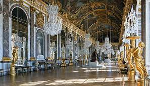
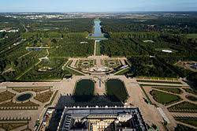

Name: 093. The Palace of versailles. Versailles, France. Louis Le Vau and Jules Hardouin-Mansart (Architects). Begun 1669 CE Masonry, stone, wood, iron, and gold leaf (architecture); marble and bronze (sculpture); Gardens.
Function
This is the palace of King Louis XIV and subsequent kings and their courts
The palace expresses the idea of the absolute monarch; the massive scale of the project is indicative of the massive power of the king
Form
Louis XIV reorganized and remodeled an existing hunting lodge into an elaborate palace.
The center of the building is Louis XIV’s bedroom, or audience chamber, from which all aspects of the design radiate like rays from the sun(hence Louis’ sobriquet the Sun King)
The building is centered in a vast garden and town complex that radiated from it
There is a subdued exterior decoration on the facade; the undulation of projecting members is understated.
Hall of Mirrors

240 feet long, facing the garden facade
Barrel-vaulted painted ceiling(paintings stress the military victories of Louis XIV; rooms that flank the Hall of Mirrors are thematically related, one of Peace and the other of War)
Light comes in from one side and ricochets off large panes of glass, the largest that could be made at the time
This is an example of a use of flickering light in an architectural setting
Mirrors were among the most expensive items manufactured in the seventeenth century–the Hall of Mirrors is an extravagant display of wealth.
Mirrors were made exclusively in Venice at the time; workers had to be imported from Venice to make the mirror, which conformed to the dictates that the decorations at Versailles had to be made in France.
Hall of Mirrors used for court and state functions: embassies, births, and marriages were celebrated in this room.
Subsequent History
Used by Bismarck to declare William I as German emperor after the defeat of the Franco-Prussian War in 1871
Used reciprocally by the French after the defeat of the Germans in WWI to sign the Treaty of Versailles in 1919.
Gardens

Classically and harmoniously arranged
Formal gardens near the palace; more wooded and less elaborate plantings farther from the palace
Baroque characteristics
Large size
Long vistas
Terminal views in fountains and statuary
Geometric plantings show control of nature
A mile-long canal crossed by another canal forms the main axis of the gardens; linked to the rising sun over the palace
Only the fountains near the palace were turned on all the time; others were turned on only when the king progressed through the gardens.
Illustrates the belief that humans can organize and control nature to make a more refined experience.